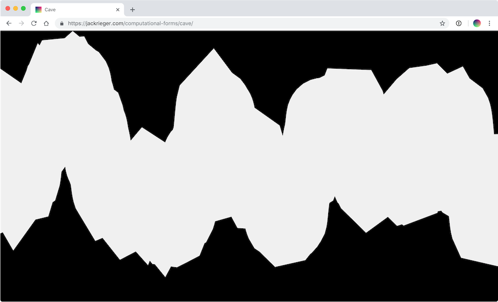
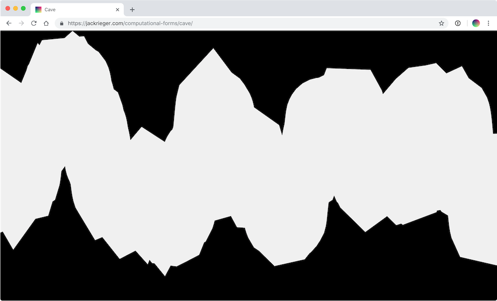

Modes of Practice
Modes of Practice
A system of posters for a lecture series at Parsons.
Designed with E Roon Kang and Brendan Griffiths.
IndividualGroup of 6
Group of 12
{kind=link}
A digital publication about art, design and technology. The publication’s identity is based on its seasonally changing homepage, which reflects upon computational aesthetics. The publication contains both written content and software, usually browser extensions or small applications. The website also features a custom side-scrolling format for text articles.
Edition 2Edition 1
JavaScript is a programming language, not just a tool. Programming is much more complex and nuanced; it is a distinct discipline – like science, design, or engineering – with history and conventions. Placing it within a historical and cultural context yields deeper understanding.
This workshop, given twice at Parsons School of Design, sought to explain JavaScript in a larger scope. JavaScript, A Context was the lecture given during the first half of the workshop. JavaScript, A Workshop, the second half, was a demo that explained some of the main programmatic tasks that designers face when making websites.
Workshop homepagePoster
{kind=link}
An eBook produced during my time at Triple Canopy. This is the first publication created programmatically with Triple Canopy’s forthcoming open-source authoring platform, bber.
In their own words: “In ‘International Art English,’ Alix Rule and David Levine describe the language of contemporary art by analyzing a corpus of press releases sent by e-flux, which is paid to do so by museums, biennials, publishers, and art fairs in order to reach a subscriber base of more than ninety thousand art professionals. The essay appeared in 2012 and soon surpassed the popularity of every other Triple Canopy publication.”
View project 
Computational Forms

Computational Forms
An occasionally expanding collection of computational art and design.
View projectA catalog with data and interviews about a particular street. When a business owner wants to start a new venture, how are they supposed to know whether the location they select is conducive to their business?
Street Catalog aims to provide this information about various streets, so that people have a better idea of whether or not it is a good idea to invest in certain locations.
View catalogAnthony Dunne & Fiona Raby, working at Parsons School of Design, have co-created and helped lead a year-long investigation into rethinking borders between design and social sciences.
In their own words: “The Imaginative Mobilities seminar will shift the discussion away from the frame of open or closed borders, to re-imagine the meaning and design of borders. Starting with the concepts of mobility and immobility across political spaces, we will attend to different kinds of movement and to the way movement and space are co-constructed.”
imaginativemobilities.orgCo-development for a thesis class homepage, with Andrew LeClair.
teaching.andrewleclair.com/thesisrandomguitarchords.com is a website that generates random, yet entirely playable, chords for the guitar. This is a useful tool that uses computation to help overcome creative blocks and stimulate new ideas.
theselinksarebroken.com is a growing collection of “page not found”, “error 404”, “oops” pages and similar. The site is a reflection of the temporality of online space. The antithesis of clickbait, any of these addresses will lead you to a dead-end, a rare circumstance on a constantly expanding network. Visitors can submit links. An absence of style emphasizes the hyperlink archetype. The site was featured in episode 86 of the Good Point podcast.
only1px.com asks visitors to consider the pixel – the building block of digital environments.
elvisonthebeach.com is an autoplaying slideshow of beachside Elvis photos. This site was created in collaboration with Sam Schwall.
randomguitarchords.comtheselinksarebroken.com
only1px.com
elvisonthebeach.com
I am a designer and developer based in New York. Currently, I work at Linked by Air, where I have worked on projects for Columbia GSAPP, CCS Bard, Yale School of Architecture and The Shed.
In the past, I have worked with Brendan Griffiths, E Roon Kang, and Triple Canopy. I also used to be a tutor at The New School, where I helped students with front-end web development.
If you would like to get in touch, send me an email at jack@jackrieger.com.
- Junior Designer, Linked By Air
- Intern, Linked By Air
- Intern, Triple Canopy
-
design += programming
Talk given at The Pedagogy of Design in the Age of Computation at Parsons School of Design -
JavaScript, A Context & Workshop
Lecture and workshop given at Parsons School of Design - Intern, Triple Canopy
-
Teaching Assistant, Type and Interaction: Skills Intensive
Course led by Nick Schaden at Parsons School of Design - Intern, Brendan Griffiths
- Intern, E Roon Kang
- Web Development Tutor, The New School
-
What is Code?
Workshop given with Aarati Akkapeddi at The New School
- Intern, E Roon Kang
- Web Development Tutor, The New School